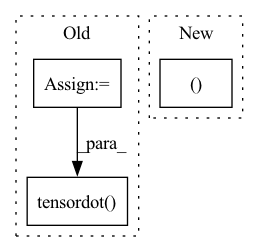

Pattern ID :40732

Before Change
assert op == ProcessingOps.CONV, f"{op} isn"t supported"
x = x.movement_op(MovementOps.SLICE, ((0, x.shape[0]), (0, x.shape[1]), (-C.py, x.shape[2]+C.py_), (-C.px, x.shape[3]+C.px_)))
gx = x.ravel().reshape(C.bs,C.groups,C.cin,x.shape[2],x.shape[3])
tx = np.lib.stride_tricks.as_strided(gx,
shape=(C.bs, C.groups, C.cin, C.H, C.W, C.oy, C.ox),
strides=(*gx.strides[0:3], gx.strides[3]*C.dy, gx.strides[4]*C.dx, gx.strides[3]*C.sy, gx.strides[4]*C.sx))
tw = w.reshape(C.groups, C.rcout, C.cin, C.H, C.W)
// too bad this doesn"t mix with stride_tricks, it can be very slow
//out = np.einsum("nGCHWhw, GkCHW -> nGkhw", tx, tw)
// 3 lines is faster than 1
tmp = np.empty((C.groups,C.rcout,C.bs,C.oy,C.ox), dtype=x.dtype)
for g in range(C.groups): tmp[g] = np.tensordot(tw[g], tx[:,g], ((1,2,3),(1,2,3)))
out = np.einsum("Gknhw -> nGkhw", tmp)
return out.reshape(C.bs, C.groups*C.rcout, C.oy, C.ox).view(CPUBuffer)
After Change
x = x.movement_op(MovementOps.SLICE, ((0, x.shape[0]), (0, x.shape[1]), (-C.py, x.shape[2]+C.py_), (-C.px, x.shape[3]+C.px_)))
tx = x.movement_op(MovementOps.STRIDED, (
(C.bs, C.groups*C.cin*x.shape[2]*x.shape[3]), (C.groups, C.cin*x.shape[2]*x.shape[3]),
(C.oy, C.sy*x.shape[3]), (C.ox, C.sx), (C.cin, x.shape[2]*x.shape[3]), (C.H, C.dy*x.shape[3]), (C.W, C.dx)))
tw = w.reshape(C.groups, C.rcout, C.cin, C.H, C.W)
out = np.einsum("nGhwCHW, GkCHW -> nGkhw", tx.contiguous(), tw.contiguous())
return out.reshape(C.bs, C.groups*C.rcout, C.oy, C.ox).view(CPUBuffer)
In pattern: SUPERPATTERN
Frequency: 3
Non-data size: 3
Instances
Fragment ID: 115073483
Project Name: geohot/tinygrad
Commit Name: bcf422dfdd9a507df433973d86a89a75656f6aa1
Time: 2022-07-16
Author: 72895+geohot@users.noreply.github.com
File Name: tinygrad/llops/ops_cpu.py
M Class Name: CPUBuffer
N Class Name: CPUBuffer
M Method Name: processing_op(4)
N Method Name: processing_op(4)
M Parent Class: np.ndarray
N Parent Class: np.ndarray
M File Name: tinygrad/llops/ops_cpu.py
N File Name: tinygrad/llops/ops_cpu.py
M Start Line: 51
M End Line: 64
N Start Line: 52
N End Line: 57
'>
Before Change
bivector) with basis (1, e12, e13, e23).
swizzle = tf.constant([
[0, 0, 0, -1],
[0, 0, 1, 0],
[0, -1, 0, 0],
[1, 0, 0, 0]
], dtype=b.dtype)
return tf.tensordot(b, swizzle, 1)
def vecvec(a, b):
vector*vector -> scalar + bivector
After Change
bivector) with basis (1, e12, e13, e23).
return b[..., ::-1]*(1, -1, 1, -1)
def trivec_dual(t):
vector + trivector -> scalar + bivector
'>
Fragment ID: 115073482
Project Name: klarh/geometric_algebra_attention
Commit Name: 2a13a2787728455bb625afb8d28e7a467679de21
Time: 2023-04-18
Author: mspells@vectorinstitute.ai
File Name: geometric_algebra_attention/tensorflow/geometric_algebra.py
M Class Name: AnonimousClass
N Class Name: AnonimousClass
M Method Name: bivec_dual(1)
N Method Name: bivec_dual(1)
M Parent Class:
N Parent Class:
M File Name: geometric_algebra_attention/tensorflow/geometric_algebra.py
N File Name: geometric_algebra_attention/tensorflow/geometric_algebra.py
M Start Line: 22
M End Line: 28
N Start Line: 22
N End Line: 22
'>
Before Change
bivector) with basis (1, e12, e13, e23).
swizzle = jnp.array([
[0, 0, 0, -1],
[0, 0, 1, 0],
[0, -1, 0, 0],
[1, 0, 0, 0]
], dtype=b.dtype)
return jnp.tensordot(b, swizzle, 1)
def vecvec(a, b):
vector*vector -> scalar + bivector
After Change
bivector) with basis (1, e12, e13, e23).
return b[..., ::-1]*jnp.asarray((1, -1, 1, -1), dtype=b.dtype)
def trivec_dual(t):
vector + trivector -> scalar + bivector
'>
Fragment ID: 115073479
Project Name: klarh/geometric_algebra_attention
Commit Name: 2a13a2787728455bb625afb8d28e7a467679de21
Time: 2023-04-18
Author: mspells@vectorinstitute.ai
File Name: geometric_algebra_attention/jax/geometric_algebra.py
M Class Name: AnonimousClass
N Class Name: AnonimousClass
M Method Name: bivec_dual(1)
N Method Name: bivec_dual(1)
M Parent Class:
N Parent Class:
M File Name: geometric_algebra_attention/jax/geometric_algebra.py
N File Name: geometric_algebra_attention/jax/geometric_algebra.py
M Start Line: 25
M End Line: 31
N Start Line: 25
N End Line: 25